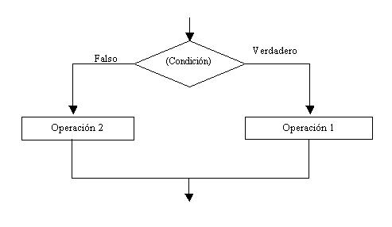

No todos los problemas pueden resolverse empleando estructuras secuenciales. Cuando hay que tomar una decisión aparecen las estructuras condicionales.
En nuestra vida diaria se nos presentan situaciones donde debemos decidir.
¿Elijo la carrera A o la carrera B?
¿Me pongo este pantalón?
Para ir al trabajo, ¿elijo el camino A o el camino B?
Al cursar una carrera, ¿elijo el turno mañana, tarde o noche?
Por supuesto que en un problema se combinan estructuras secuenciales y condicionales.
Estructura condicional simple.
Cuando se presenta la elección tenemos la opción de realizar una actividad o no realizar ninguna.
Representación gráfica:

Podemos observar:
El rombo representa la condición. Hay dos opciones que se pueden tomar. Si la condición da verdadera se sigue el camino del verdadero, o sea el de la derecha, si la condición da falsa se sigue el camino de la izquierda.
Se trata de una estructura CONDICIONAL SIMPLE porque por el camino del verdadero hay actividades y por el camino del falso no hay actividades.
Por el camino del verdadero pueden existir varias operaciones, entradas y salidas, inclusive ya veremos que puede haber otras estructuras condicionales.
Problema:
Ingresar el sueldo de una persona, si supera los 3000 pesos mostrar un mensaje en pantalla indicando que debe abonar impuestos.
Diagrama de flujo:

Podemos observar lo siguiente: Siempre se hace la carga del sueldo, pero si el sueldo que ingresamos supera 3000 pesos se mostrará por pantalla el mensaje "Esta persona debe abonar impuestos", en caso que la persona cobre 3000 o menos no aparece nada por pantalla.
Programa:
#include<iostream>
using namespace std;
void main()
{
float sueldo;
cout <<"Ingrese el sueldo:";
cin >>sueldo;
if (sueldo>3000)
{
cout <<"Esta persona debe abonar impuestos";
}
cin.get();
cin.get();
}
La palabra clave "if" indica que estamos en presencia de una estructura condicional; seguidamente disponemos la condición entre paréntesis. Por último encerrada entre llaves las instrucciones de la rama del verdadero.
Ejecutando el programa e ingresamos un sueldo superior a 3000 pesos. Podemos observar como aparece en pantalla el mensaje "Esta persona debe abonar impuestos", ya que la condición del if es verdadera.
Volvamos a ejecutar el programa y carguemos un sueldo menor o igual a 3000 pesos. No debe aparecer mensaje en pantalla.
Este proyecto lo puede descargar en un zip desde este enlace : PagaImpuestos
Estructura condicional compuesta.
Cuando se presenta la elección tenemos la opción de realizar una actividad u otra. Es decir tenemos actividades por el verdadero y por el falso de la condición. Lo más importante que hay que tener en cuenta que se realizan las actividades de la rama del verdadero o las del falso, NUNCA se realizan las actividades de las dos ramas.
Representación gráfica:

En una estructura condicional compuesta tenemos entradas, salidas, operaciones, tanto por la rama del verdadero como por la rama del falso.
Problema:
Realizar un programa que solicite ingresar dos números distintos y muestre por pantalla el mayor de ellos.
Diagrama de flujo:

Se hace la entrada de num1 y num2 por teclado. Para saber cual variable tiene un valor mayor preguntamos si el contenido de num1 es mayor (>) que el contenido de num2, si la respuesta es verdadera vamos por la rama de la derecha e imprimimos num1, en caso que la condición sea falsa vamos por la rama de la izquierda (Falsa) e imprimimos num2.
Como podemos observar nunca se imprimen num1 y num2 simultáneamente.
Estamos en presencia de una ESTRUCTURA CONDICIONAL COMPUESTA ya que tenemos actividades por la rama del verdadero y del falso.
Programa:
#include<iostream>
using namespace std;
void main()
{
int num1, num2;
cout <<"Ingrese primer valor:";
cin >>num1;
cout <<"Ingrese segundo valor:";
cin >>num2;
if (num1 > num2)
{
cout <<num1;
}
else
{
cout <<num2;
}
cin.get();
cin.get();
}
Cotejemos el diagrama de flujo y la codificación y observemos que el primer bloque de llaves después del if representa la rama del verdadero y el segundo bloque de llaves representa la rama del falso.
Compilemos el programa, si hubo errores sintácticos corrijamos y carguemos dos valores, como por ejemplo:
Ingrese el primer valor: 10 Ingrese el segundo valor: 4 10
Si ingresamos los valores 10 y 4 la condición del if retorna verdadero y ejecuta el primer bloque.
Un programa se controla y corrige probando todos sus posibles resultados.
Ejecutemos nuevamente el programa e ingresemos:
Ingrese el primer valor: 10 Ingrese el segundo valor: 54 54
Cuando a un programa le corregimos todos los errores sintácticos y lógicos ha terminado nuestra tarea y podemos entregar el mismo al USUARIO que nos lo solicitó.
Este proyecto lo puede descargar en un zip desde este enlace : NumeroMayor
Operadores
En una condición deben disponerse únicamente variables, valores constantes y operadores relacionales.
>Operadores Relacionales:
> (mayor) < (menor) >= (mayor o igual) <= (menor o igual) == (igual) != (distinto)
Operadores Matemáticos
+ (más)
- (menos)
* (producto)
/ (división)
% (resto de una división) Ej.: x=13%5; {se guarda 3}
Hay que tener en cuenta que al disponer una condición debemos seleccionar que operador relacional se adapta a la pregunta.
Ejemplos:
Se ingresa un número multiplicarlo por 10 si es distinto a 0. (!=) Se ingresan dos números mostrar una advertencia si son iguales. (==)
Los problemas que se pueden presentar son infinitos y la correcta elección del operador sólo se alcanza con la práctica intensiva en la resolución de problemas.
Problemas propuestos
- Realizar un programa que solicite la carga por teclado de dos números, si el primero es mayor al segundo informar su suma y diferencia, en caso contrario informar el producto y la división del primero respecto al segundo.
- Se ingresan tres notas de un alumno, si el promedio es mayor o igual a siete mostrar un mensaje "Promocionado".
-
Se ingresa por teclado un número positivo de uno o dos dígitos (1..99) mostrar un mensaje indicando si el número tiene uno o dos dígitos.
(Tener en cuenta que condición debe cumplirse para tener dos dígitos un número entero)
#include<iostream>
using namespace std;
void main()
{
int num1,num2;
cout <<"Ingrese primer valor:";
cin >>num1;
cout <<"Ingrese segundo valor:";
cin >>num2;
if (num1 > num2)
{
int suma,diferencia;
suma = num1 + num2;
diferencia = num1 - num2;
cout <<"La suma de los dos valores es:";
cout <<suma;
cout <<"\n";
cout <<"La diferencia de los dos valores es:";
cout <<diferencia;
}
else
{
int producto,division;
producto = num1 * num2;
division = num1 / num2;
cout <<"El producto de los dos valores es:";
cout <<producto;
cout <<"\n";
cout <<"La división de los dos valores es:";
cout <<division;
}
cin.get();
cin.get();
}
Este proyecto lo puede descargar en un zip desde este enlace :OperacionesNumeros
#include<iostream>
using namespace std;
void main()
{
int nota1,nota2,nota3;
cout <<"Ingrese primer nota:";
cin >>nota1;
cout <<"Ingrese segunda nota:";
cin >>nota2;
cout <<"Ingrese tercer nota:";
cin >>nota3;
int promedio;
promedio = (nota1 + nota2 + nota3) / 3;
if (promedio >= 7)
{
cout <<"Promocionado";
}
cin.get();
cin.get();
}
Este proyecto lo puede descargar en un zip desde este enlace :NotaAlumnos
#include<iostream>
using namespace std;
void main()
{
int num;
cout <<"Ingrese un valor entero de 1 o 2 dígitos:";
cin >>num;
if (num < 10)
{
cout <<"Tiene un dígito";
}
else
{
cout <<"Tiene dos dígitos";
}
cin.get();
cin.get();
}
Este proyecto lo puede descargar en un zip desde este enlace :CantidadDigitos